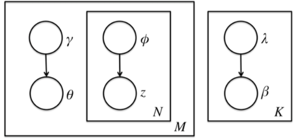

主题模型之LDA(三)
变分推断EM算法中通过"变分推断"(Variational Inference)和EM算法来得到LDA模型的文档主题分布和主题词分布。首先来看EM算法在这里的使用，模型里面有隐藏变量\theta,\beta,z，模型的参数是\alpha,\eta。为了求出模型参数和对应的隐藏变量分布，EM算法需要在E步先求出隐藏变量\theta,\beta,z的基于条件概率分布期望，接着在M步极大化这个期望，得到更新的后验模型参数\alpha,\eta。

在EM算法的E步，由于\theta,\beta,z的耦合，很难求出隐藏变量\theta,\beta,z的条件概率分布，也很难求出对应的期望，需要"变分推断"来帮忙，这里所谓的变分推断，就是在隐藏变量存在耦合的情况下，通过变分假设即假设所有的隐含变量都是各自的独立分布形成的，从而去掉了隐藏变量之间的耦合关系。使用各个独立分布形成的变分分布来模拟近似隐藏变量的条件分布，这样就可以顺利使用EM算法了。
当进行若干轮的E步和M步迭代更新后，就可以得到合适的近似隐藏变量分布\theta,\beta,z和模型后验参数\alpha,\eta，进而就得到了我们需要的LDA主题文档分布和主题分布。
LDA变分推断
在给定参数\alpha和\eta，可以得到文档主题分布\theta,\beta,z,w的联合概率分布：
p(\theta,\beta,z,w|\alpha,\eta) =\bigg ( \prod_{k=1}^K p(\beta|\eta) \bigg ) \cdot p(\theta|\alpha)\cdot \bigg (\prod_{n=1}^N p(z_n|\theta)p(w_n|z_n,\beta_{z_n})\bigg )
由式子(1)可以得到文档的边缘概率，即对\theta,\beta,z求积分即可：
p(w|\alpha,\eta)=\int\int p(\beta|\eta)p(\theta|\alpha)\bigg (\prod_{n=1}^N\sum_{z_n} p(z_n|\theta)p(w_n|z_n,\beta_{z_n})\bigg)d_{\theta}d_{\beta}
要使用EM算法，需要求出隐藏变量的条件概率分布如下：
p(\theta,\beta,z|w,\alpha,\eta)=\frac{p(\theta,\beta,z,w|\alpha,\eta)}{p(w|\alpha,\eta)}
由于\theta,\beta,z之间是互相耦合的，条件概率式(2)是无法直接求出来的。为了解决这个问题引入变分推断，具体就是引入基于mean field assumption的变分推断，这个推断假设所有的隐藏变量都是通过各自的独立分布形成的，如图所示：

假设隐藏变量\theta是由独立分布\gamma形成的，隐藏变量z是由独立分布\phi形成的，隐藏变量\beta是由独立分布\lambda形成的。于是就可以得到了三个隐藏变量联合的变分分布q为：
\begin{align}
q(\beta,\theta,z|\lambda,\phi,\gamma)
&=\prod_{k=1}^K q(\beta_k|\lambda_k)\prod_{d=1}^M p(\theta_d,z_d|\gamma_d,\phi_d)\\
&=\prod_{k=1}^K q(\beta_k|\lambda_k)\prod_{d=1}^M\bigg ( q(\theta_d|\gamma_d)\prod_{n=1}^{N_d}q(z_{dn}|\phi_{dn}) \bigg )\\
\end{align}
现在可以用q(\beta,\theta,z|\lambda,\phi,\gamma)来近似估计p(\theta,\beta,z|w,\alpha,\eta)，让两个分布尽可能的相似，因此最优化的目标是最小化两个分布之间的KL距离：
(\gamma^*,\phi^*,\lambda^*)=\arg\min_{\gamma,\phi,\lambda} D( q(\beta,\theta,z|\lambda,\phi,\gamma) || p(\theta,\beta,z|w,\alpha,\eta))
D(q||p)即为KL散度或KL距离，对应分布p和q的交叉熵，即：
D(q||p)=\sum_{x}q(x)\log \frac{q(x)}{p(x)}=E_{q(x)}(\log q(x)-\log p(x)) \notag
然而直接优化这个KL散度求\gamma^*,\phi^*,\lambda^*并不是很好求，需要对式(6)进行深入推导。为了简化表示，用\mathbb{E}_q(x)代替\mathbb{E}_{q(\beta,z,\theta)|\lambda,\phi,\gamma)}(x)，用来表示x对于变分分布q(\beta,z,\theta|\lambda,\phi,\gamma)的期望。
\begin{align}
&D( q(\beta,\theta,z|\lambda,\phi,\gamma) || p(\theta,\beta,z|w,\alpha,\eta))\\
=& \quad \mathbb{E}_q\log q(\beta,\theta,z|\lambda,\phi,\gamma)- \mathbb{E}_q\log p(\theta,\beta,z|w,\alpha,\eta)\\
=& \quad \mathbb{E}_q\log q(\beta,\theta,z|\lambda,\phi,\gamma)- \mathbb{E}_q\log \frac{p(\theta,\beta,z,w|\alpha,\eta)}{p(w|\eta,\alpha)}\\
=& \quad \mathbb{E}_q\log q(\beta,\theta,z|\lambda,\phi,\gamma)- \mathbb{E}_q\log p(\theta,\beta,z,w|\alpha,\eta)+\mathbb{E}_q \log p(w|\eta,\alpha)\\
=& \quad \mathbb{E}_q\log q(\beta,\theta,z|\lambda,\phi,\gamma)- \mathbb{E}_q\log p(\theta,\beta,z,w|\alpha,\eta)+ \log p(w|\eta,\alpha)\\
=&-\bigg (- \mathbb{E}_q\log q(\beta,\theta,z|\lambda,\phi,\gamma)+ \mathbb{E}_q\log p(\theta,\beta,z,w|\alpha,\eta) \bigg )+ \log p(w|\eta,\alpha)\\
\overset{\Delta}{=} & -\mathcal{L}(\lambda,\phi,\gamma;\alpha,\eta) + \log p(w|\eta,\alpha)
\end{align}
式(7)-(8)利用KL散度的定义进行展开；式(8)-(10)利用贝叶斯公式并展开；式(11)-(12) q和p是无关的，所以求期望等于其本身；式(12)-(13)引入\mathcal{L}(\cdot)函数，一般称为ELBO(Evidence Lower BOund)。
现在就可以得到KL(\cdot)和\mathcal{L}(\cdot)之间的关系：
\begin{align}
\log p(w|\eta,\alpha)&=\mathcal{L}(\lambda,\phi,\gamma;\alpha,\eta)+D( q(\beta,\theta,z|\lambda,\phi,\gamma) || p(\theta,\beta,z|w,\alpha,\eta))
\\
\mathcal{L}(\lambda,\phi,\gamma;\alpha,\eta) & = \mathbb{E}_q\log p(\theta,\beta,z,w|\alpha,\eta) - \mathbb{E}_q\log q(\beta,\theta,z|\lambda,\phi,\gamma)
\end{align}
式(14)中左侧对数似然部分是关于可观测变量w的可以看成常数。因此最小化KL散度等价于最大化ELBO，现在变分推断最终等价的转换为要求ELBO的最大值。
极大化ELBO求解变分参数
首先对ELBO函数进行整理得到：
\begin{aligned}
\mathcal{L}(\lambda,\phi,\gamma;\alpha,\eta)
=&
\mathbb{E}_q[\log p(\beta|\eta)] +\mathbb{E}_q[\log p(z|\theta)]+\mathbb{E}_q[\log p(\theta|\alpha)]+\mathbb{E}_q[\log p(w|z,\beta)]\\
&-\mathbb{E}_q[\log p(\beta|\lambda)]-\mathbb{E}_q[\log p(z|\phi)]-\mathbb{E}_q[\log p(\theta|\gamma)]
\end{aligned}
展开后公有7项，现在需要对这7项分别做一个展开。
对于第一项\mathbb{E}_q[\log p(\beta|\eta)]有：
\begin{align}
\mathbb{E}_q[logp(\beta|\eta)]
& = \mathbb{E}_q[log\prod_{k=1}^K(\frac{\Gamma(\sum\limits_{i=1}^V\eta_i)}{\prod_{i=1}^V\Gamma(\eta_i)}\prod_{i=1}^V\beta_{ki}^{\eta_i-1})] \\
& = Klog\Gamma(\sum\limits_{i=1}^V\eta_i) - K\sum\limits_{i=1}^Vlog\Gamma(\eta_i) + \sum\limits_{k=1}^K \mathbb{E}_q[\sum\limits_{i=1}^V(\eta_i-1) log\beta_{ki}] \\
& = Klog\Gamma(\sum\limits_{i=1}^V\eta_i) - K\sum\limits_{i=1}^Vlog\Gamma(\eta_i) +
\sum\limits_{k=1}^K\sum\limits_{i=1}^V(\eta_i-1) \mathbb{E}_q[ log\beta_{ki}] \\
& = Klog\Gamma(\sum\limits_{i=1}^V\eta_i) - K\sum\limits_{i=1}^Vlog\Gamma(\eta_i) +
\sum\limits_{k=1}^K\sum\limits_{i=1}^V(\eta_i-1) (log\Gamma(\lambda_{ki} ) - log\Gamma(\sum\limits_{i^{'}=1}^V\lambda_{ki^{'}}))^{'} \\
& = Klog\Gamma(\sum\limits_{i=1}^V\eta_i) - K\sum\limits_{i=1}^Vlog\Gamma(\eta_i) +
\sum\limits_{k=1}^K\sum\limits_{i=1}^V(\eta_i-1)
(\Psi(\lambda_{ki}) - \Psi(\sum\limits_{i^{'}=1}^V\lambda_{ki^{'}}) \\
\end{align}
式(16)-(17)直接展开；式(17)-(18)利用期望性质\mathbb{E}(X+Y)=\mathbb{E}(X)+\mathbb{E}(Y)；式(19)~(20)利用指数分布族性质。
指数分布族是值分布函数满足如下形式的概率分布：
p(x|\theta)=h(x) \exp \bigg ( \eta(\theta)\cdot T(x)-A(\theta) \bigg) \notag
分布函数中T,\eta和A的都是具有特殊的意义：
指数分布族包含了很多常见的分布，如正态分布，Gamma分布，beta分布，狄利克雷函数分布，伯努利分布，泊松分布，Wishart分布，Inverse-Wishart分布等等。指数分布具有很多性质，如：
\begin{align}
\frac{d}{d\eta(\theta)}A(\theta)
&=\frac{d}{d\eta(\theta)} \log \bigg ( \int h(x)\exp (\eta(\theta)\cdot T(x))dx \bigg ) \\
&= \frac{ \int T(x) h(x)\exp (\eta(\theta)\cdot T(x))dx}{ \int h(x)\exp (\eta(\theta)\cdot T(x))dx} \\
&=\frac{ \int T(x) h(x)\exp (\eta(\theta)\cdot T(x))dx}{ \exp (A(\theta))} \\
&=\int T(x) h(x)\exp (\eta(\theta)\cdot T(x)-A(\theta))dx \\
& = \mathbb{E}_{p(x|\theta)}T(x)
\end{align}
以上式中\mathbb{E}_q(\log \beta_{ki})为例：
\mathbb{E}_q[\sum\limits_{i=1}^Vlog\beta_{ki}] = (log\Gamma(\lambda_{ki} ) - log\Gamma(\sum\limits_{i^{'}=1}^V\lambda_{ki^{'}}))^{'} = \Psi(\lambda_{ki}) - \Psi(\sum\limits_{i^{'}=1}^V\lambda_{ki^{'}}) \notag
其中\Psi(x)=\frac{d}{dx}\log \Gamma(x)=\frac{\Gamma(x)^‘}{\Gamma(x)}
剩余的六项直接给出结果：
\begin{align}
\mathbb{E}_q[logp(z|\theta)]
&= \sum\limits_{n=1}^N\sum\limits_{k=1}^K\phi_{nk}\Psi(\gamma_{k}) - \Psi(\sum\limits_{k^{'}=1}^K\gamma_{k^{'}})
\\
\mathbb{E}_q[logp(\theta|\alpha)]
&= log\Gamma(\sum\limits_{k=1}^K\alpha_k) - \sum\limits_{k=1}^Klog\Gamma(\alpha_k) + \sum\limits_{k=1}^K(\alpha_k-1)(\Psi(\gamma_{k}) - \Psi(\sum\limits_{k^{'}=1}^K\gamma_{k^{'}}))
\\
\mathbb{E}_q[logp(w|z, \beta)]
& = \sum\limits_{n=1}^N\sum\limits_{k=1}^K\sum\limits_{i=1}^V\phi_{nk}w_n^i(\Psi(\lambda_{ki}) - \Psi(\sum\limits_{i^{'}=1}^V\lambda_{ki^{'}}) )
\\
\mathbb{E}_q[logq(\beta|\lambda)]
&= \sum\limits_{k=1}^K(log\Gamma(\sum\limits_{i=1}^V\lambda_{ki}) - \sum\limits_{i=1}^Vlog\Gamma(\lambda_{ki})) + \sum\limits_{k=1}^K\sum\limits_{i=1}^V (\lambda_{ki}-1)(\Psi(\lambda_{ki}) - \Psi(\sum\limits_{i^{'}=1}^V\lambda_{ki^{'}}) )
\\
\mathbb{E}_q[logq(z|\phi)] & = \sum\limits_{n=1}^N\sum\limits_{k=1}^K\phi_{nk}log\phi_{nk}
\\
\mathbb{E}_q[logq(\theta|\gamma)] & = log\Gamma(\sum\limits_{k=1}^K\gamma_k) - \sum\limits_{k=1}^Klog\Gamma(\gamma_k) + \sum\limits_{k=1}^K(\gamma_k-1)(\Psi(\gamma_{k}) - \Psi(\sum\limits_{k^{'}=1}^K\gamma_{k^{'}}))
\end{align}
现在得到了\mathcal{L}(\gamma,\phi,\lambda;\alpha,\eta)之后，目标就是极大化这个下界ELBO关于(\gamma,\phi,\lambda)得到真实后验概率分布的近似分布q(\cdot) 即EM算法的E步，然后固定变分参数，极大化ELBO关于(\alpha,\eta)即EM算法的M步。
EM算法之E步
(1)ELBO对\phi求导
为了简单起见，直接省略不包含\phi的项，仅根据包含参数的\phi的项构造拉格朗日函数：
\begin{align}
L_{[\phi]}
=& \sum_{n=1}^N\sum_{k=1}^K \phi_{nk}\bigg ( \Psi(\gamma_k)-\Psi(\sum_{k'=1}^K\gamma_{k'}) \bigg)
+ \sum\limits_{n=1}^N\sum\limits_{k=1}^K\sum\limits_{i=1}^V\phi_{nk}w_n^i \bigg (\Psi(\lambda_{ki}) - \Psi(\sum\limits_{i^{'}=1}^V\lambda_{ki^{'}}) \bigg )\\
& - \sum\limits_{n=1}^N\sum\limits_{k=1}^K\phi_{nk}log\phi_{nk}
+\sum_{n=1}^N \upsilon_n \bigg( \sum_{k=1}^K \phi_{nk}-1 \bigg)
\end{align}
求L_{[\phi]}对参数\phi求偏导并令导数等于0，可以得到
\begin{align}
0
=\frac{\partial L}{\partial \phi_{nk}}
=\Psi(\gamma_k)-\Psi(\sum_{k'=1}^K\gamma_{k'}) +\sum\limits_{i=1}^V w_n^i \bigg (\Psi(\lambda_{ki}) - \Psi(\sum\limits_{i^{'}=1}^V\lambda_{ki^{'}}) \bigg )-\log \phi_{nk}+\upsilon_n
\end{align}
最终可以得到
\phi_{nk}\approx \exp \bigg( \Psi(\gamma_k)-\Psi(\sum_{k'=1}^K\gamma_{k'}) +\sum\limits_{i=1}^V w_n^i \bigg (\Psi(\lambda_{ki}) - \Psi(\sum\limits_{i^{'}=1}^V\lambda_{ki^{'}}) \bigg ) \bigg)
(2)ELBO对\gamma求导
构造对应包含\gamma的拉格朗日函数：
\begin{align}
L[\gamma]
=&\sum\limits_{n=1}^N\sum\limits_{k=1}^K\phi_{nk}\Psi(\gamma_{k}) - \Psi(\sum\limits_{k^{'}=1}^K\gamma_{k^{'}})
+\sum\limits_{k=1}^K(\alpha_k-1)(\Psi(\gamma_{k}) - \Psi(\sum\limits_{k^{'}=1}^K\gamma_{k^{'}})) \\
&-log\Gamma(\sum\limits_{k=1}^K\gamma_k) + \sum\limits_{k=1}^Klog\Gamma(\gamma_k) - \sum\limits_{k=1}^K(\gamma_k-1)(\Psi(\gamma_{k}) - \Psi(\sum\limits_{k^{'}=1}^K\gamma_{k^{'}}))\\
=&\sum_{k=1}^K \bigg ( \Psi(\gamma_k)-\Psi(\sum_{k'=1}^K \gamma_{k'}) \bigg) \bigg ( \sum_{n=1}^N \phi_{nk}+\alpha_k-\gamma_k \bigg)- \log \Gamma(\sum_{k=1}^K \gamma_k)+\sum_{k=1}^K log \Gamma(\gamma_k)
\end{align}
求L_{[\gamma]}对参数\gamma求偏导并令导数等于0，可以得到
\begin{align}
0
=\frac{\partial L}{\partial \gamma_{k}}
=\bigg (\Psi'(\gamma_k)-\Psi'(\sum_{k'=1}^K \gamma_{k'}) \bigg ) \bigg (\sum_{n=1}^N \phi_{nk}+\alpha_k-\gamma_k \bigg)
\end{align}
最终可以得到
\gamma_k = \alpha_k +\sum_{n=1}^N \phi_{nk}
(3)ELBO对\lambda求导
构造对应包含\lambda的拉格朗日函数：
\begin{align}
L_{[\lambda]}
=& \sum\limits_{k=1}^K\sum\limits_{i=1}^V(\eta_i-1) (\Psi(\lambda_{ki}) - \Psi(\sum\limits_{i^{'}=1}^V\lambda_{ki^{'}})
+ \sum\limits_{n=1}^N\sum\limits_{k=1}^K\sum\limits_{i=1}^V\phi_{nk}w_n^i \bigg (\Psi(\lambda_{ki}) - \Psi(\sum\limits_{i^{'}=1}^V\lambda_{ki^{'}}) \bigg )
\\
&-\sum\limits_{k=1}^K\bigg (log\Gamma(\sum\limits_{i=1}^V\lambda_{ki}) - \sum\limits_{i=1}^Vlog\Gamma(\lambda_{ki})\bigg ) -\sum\limits_{k=1}^K\sum\limits_{i=1}^V (\lambda_{ki}-1)\bigg (\Psi(\lambda_{ki}) - \Psi(\sum\limits_{i^{'}=1}^V\lambda_{ki^{'}}) \bigg )
\end{align}
求L_{[\lambda]}对参数\lambda求偏导并令导数等于0，可以得到：
\begin{align}
0
=\frac{\partial L}{\partial \lambda_{ki}}
=\bigg ( \eta_i+\sum_{n=1}^N \phi_{nk}w_n^i-\lambda_{ki} \bigg) \bigg ( \Psi'(\lambda_{ki})-\Psi'(\sum_{i'=1}^V \lambda_{ki'}) \bigg)
\end{align}
最终得到：
\lambda_{ki}=\eta_i +\sum_{n=1}^N \phi_{nk}w_n^i
由于参数\lambda决定了\beta分布，对于整个训练预料\beta是共有的，因此参数\lambda实际应该按照如下方式更新：
\lambda_{ki}=\eta_i +\sum_{d=1}^M \sum_{n=1}^{N_{d}}\phi_{d_{nk}}w_{dn}^i
最终的E步就是用(27)、(28)、(30)来更新三个变分参数。不断迭代更新直到三个变分参数收敛。当变分参数收敛后，下一步就是M步，固定变分参数，更新模型参数\eta,\alpha了。
EM算法之M步
在E步已经得到了当前最佳的变分参数，现在M步就可以固定变分参数，极大化ELBO得到最优的模型参数\eta,\alpha。求解最优模型参数\alpha,\eta的方法很多，如梯度下降法，牛顿法等都是可以。LDA这里一般使用的是牛顿法，即通过求出ELBO对\alpha,\eta的一阶导数和二阶导数表达式，然后迭代求解\alpha,\eta在M步的最优解。
(1)从下界L(\gamma,\phi,\lambda;\alpha,\eta)中提取仅包含\alpha的项（基于整个训练语料M篇文档）：
\begin{align}
L_{[\alpha]}
=& \sum_{d=1}^M \bigg (log\Gamma(\sum\limits_{k=1}^K\alpha_k) - \sum\limits_{k=1}^Klog\Gamma(\alpha_k) \bigg)
+ \sum\limits_{d=1}^M \sum\limits_{k=1}^K(\alpha_k-1)(\Psi(\gamma_{dk}) - \Psi(\sum\limits_{k^{'}=1}^K\gamma_{dk^{'}}))
\end{align}
对L_{[\alpha]}求偏导有：
\begin{align}
\nabla_{\alpha_k}L
=\frac{\partial L}{\partial \alpha_k} &= M(\Psi(\sum\limits_{k^{'}=1}^K\alpha_{k^{'}}) - \Psi(\alpha_{k}) ) + \sum\limits_{d=1}^M(\Psi(\gamma_{dk}) - \Psi(\sum\limits_{k^{'}=1}^K\gamma_{dk^{'}}))
\\
\nabla_{\alpha_k \alpha_j}L
=\frac{\partial L}{\partial \alpha_k \alpha_j} &= M(\Psi^{'}(\sum\limits_{k^{'}=1}^K\alpha_{k^{'}})- \delta(k,j)\Psi^{'}(\alpha_{k}) )
\end{align}
其中当且仅当k=j时，\delta(k,j)=1否则\delta(k,j)=0。
(2)从下界L(\gamma,\phi,\lambda;\alpha,\eta)中提取仅包含\eta的项：
\begin{align}
L_{[\eta]}
& = Klog\Gamma(\sum\limits_{i=1}^V\eta_i) - K\sum\limits_{i=1}^Vlog\Gamma(\eta_i) +
\sum\limits_{k=1}^K\sum\limits_{i=1}^V(\eta_i-1)
(\Psi(\lambda_{ki}) - \Psi(\sum\limits_{i^{'}=1}^V\lambda_{ki^{'}}) \\
\end{align}
对L_{[\eta]}求偏导有：
\begin{align}
\nabla_{\eta_j}L=\frac{\partial L}{\partial \eta_j}
&= K(\Psi(\sum\limits_{i^{'}=1}^V\eta_{i^{'}}) - \Psi(\eta_{i}) ) + \sum\limits_{k=1}^K(\Psi(\lambda_{ki}) - \Psi(\sum\limits_{i^{'}=1}^V\lambda_{ki^{'}}))
\\
\nabla_{\eta_j \eta_i}L=\frac{\partial L}{\partial \eta_j \eta_i}
&= K(\Psi^{'}(\sum\limits_{i^{'}=1}^V\eta_{i^{'}}) - \delta(i,j)\Psi^{'}(\eta_{i}) )
\end{align}
其中，当且仅当k=j时，\delta(k,j)=1否则\delta(k,j)=0。
最终牛顿迭代法的更新公式为：
\begin{align}
\alpha_{k+1} = \alpha_k + \frac{\nabla_{\alpha_k}L}{\nabla_{\alpha_k\alpha_j}L}
\\
\eta_{i+1} = \eta_i+ \frac{\nabla_{\eta_i}L}{\nabla_{\eta_i\eta_j}L}
\end{align}